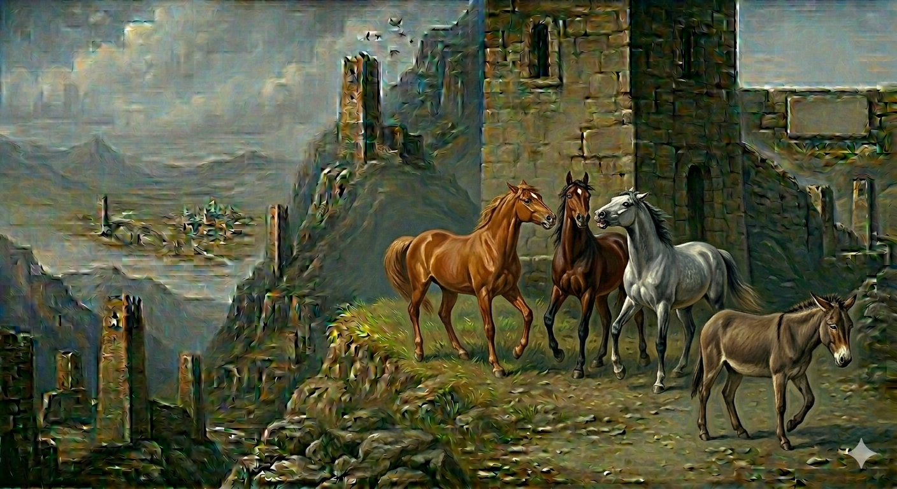

И.А. Дахкильгов. Хьехаме дувцарш - поучительные рассказы-притчи.
И.А. Дахкильгов. Хьехаме дувцарш - поучительные рассказы-притчи. Из ингушского фольклора.

Говраша эккхаяь вирбӀарз
Цкъа яжаш йоахкача говрашта тӀаяха хиннай вирбӀарз. - Ӏа фу леладу! ДӀаяла тхона юкъера, вирбӀарз товргъяц тхоца, - аьнна, човхаяьй из говраша. - Ма чувхае со, - дийхад вирбӀарзо, - нана кхала, шун йиша, ма йи са. - Нана кхала хьа яле а, да ше мадарра вир хиннад: хьа, дӀаяла укхазара, - аьнна эккхаяьй говраша из вирбӀарз.
РУССКИЙ
Лошади прогнали мула
Как-то паслись кони. Подошел к ним мул. - Ты чего к нам примазываешься? - возмутились кони, - тебе, мулу, не место среди нас, коней. Поди прочь! - Не гоните меня, - стал просить мул, - ведь мать моя, кобылица, является сестрою лошадиного племени. - Хотя мать твоя и была из нашего племени, но отец-то твой был самый что ни на есть настоящий осел. Уходи от нас, - сказали лошади и прогнали мула.
ENGLISH
The horses chased the mule away
One day, the horses were grazing. A mule came up to them. "Why are you hanging around us?" - the horses protested. "You, a mule, have no place among us horses. Go away!" "Don't chase me away," - pleaded the mule. "After all, my mother was a mare and a sister to the horse tribe." "Although your mother was from our tribe, your father was a proper donkey through and through. Go away from us," - said the horses, and they chased the mule away.
НОХЧИЙН
Говраша эккхийна вирбӀарз
Цкъа йежаш йохкучу говрашна тӀейахна хилла вирбӀарз. - Ахь хӀун леладо! ДӀайала тхуна йукъар, вирбӀарз товр йац тхоьца, - аьлла, човхийна иза говраша. - Ма човхайе со, - дехна вирбӀарзо, - нана кхела, шун йиша, ма йу сан. - Нана кхела хьан йалахь а, да ша ма-йарра вир хилла: хьа, дӀайала хӀоккхузара, - аьлла эккхийна говраша и вирбӀарз.
ПОГОВОРКИ
Вирала вирбӀарз тол, вирбӀарзала алача тол, алачал хохка ды тол, баьре дика вале. Мул лучше ишака, лошадь лучше мула, верховой конь лучше лошади, если на нем хороший всадник.ВирбӀарзах ды хиннабац. Мул не станет верховым конем.Газа муӀаех мукх хинабац, нанас ца ваьчох воша хиннавац. Как из козлиного рога не получить ячменя, так и рожденному не твоей матерью не стать тебе братом.Гирдз даьнна говра ремах къоастаяьй. Шелудивую лошадь (чесоточную) изгнали из табуна.Дикача кхало дика бакъ ю. От хорошей кобылицы и жеребенок хорош.Лайх аьла а хиннавац, вирах ды а хиннабац. Как осел не станет скакуном, так и холоп не станет князем.Лаьх аьла хиннавац, вирах ды хиннабац. Раб не станет князем, как и ишак не станет конем.Нитташи хьажкӀаши цхьан кхай тац. На одном поле не уживаются крапива и кукуруза.Фуаши хийи мелла кхехкадарах вӀаший эц. Сколько ни вари воду и яйца, они не смешиваются.ЦӀагӀара воацар новкъост вац. Настоящим товарищем может быть лишь тот, кто из родных тебе мест.Эмалк йоргӀагӀа хилац. Неук не бывает иноходцем.Ӏовдалчо яьхад вирах: “Пхьагала ворхӀлагӀа да ва ер”. Дурак говорил про ишака: “Это седьмой предок зайца”.